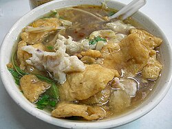
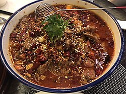
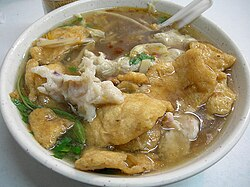
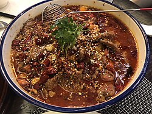
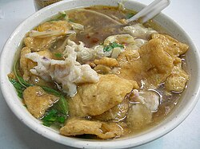
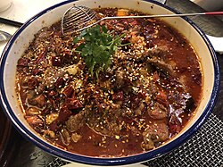

Chinese cuisine includes styles originating from the diverse regions of China, as well as from Chinese people in other parts of the world. The cuisine is known for its variety of flavors, ingredients, and cooking techniques. Some of the most popular Chinese dishes include Peking duck, Kung Pao chicken, sweet and sour pork, dumplings, and fried rice. Chinese cuisine often emphasizes balance and harmony in flavors, textures, and colors, making it a favorite among food enthusiasts worldwide.

